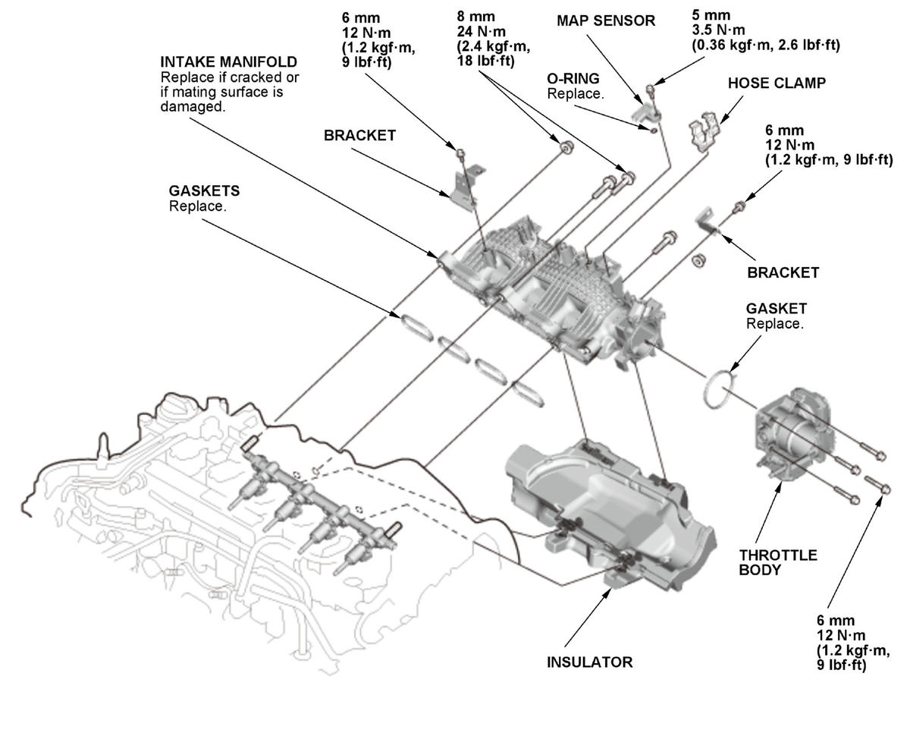

LEMON Manuals
: Even more car manuals for everyone: 1960-2025
Home
>>
Honda
>>
2016
>>
Civic LX, 4D Sedan, Automatic CVT Trans
>>
Repair and Diagnosis
>>
Engine Performance
>>
Engine Control Systems
>>
Engine Control / Engine Mechanical - Service Information
>>
Removal and Installation
>>
Intake Manifold Removal and Installation (1.5L Engine)
>>
Exploded View
Exploded View
Intake Manifold
Fig 1: Exploded View Of Intake Manifold Components With Torque Specifications (1.5L Engine)

Courtesy of HONDA, U.S.A., INC.